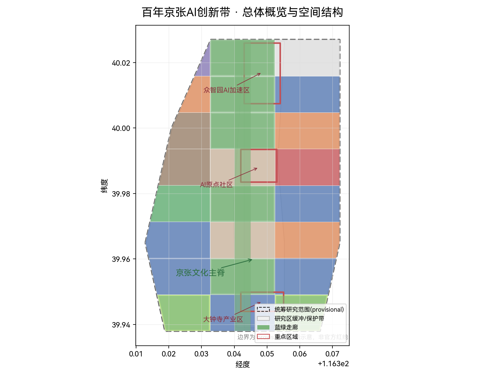
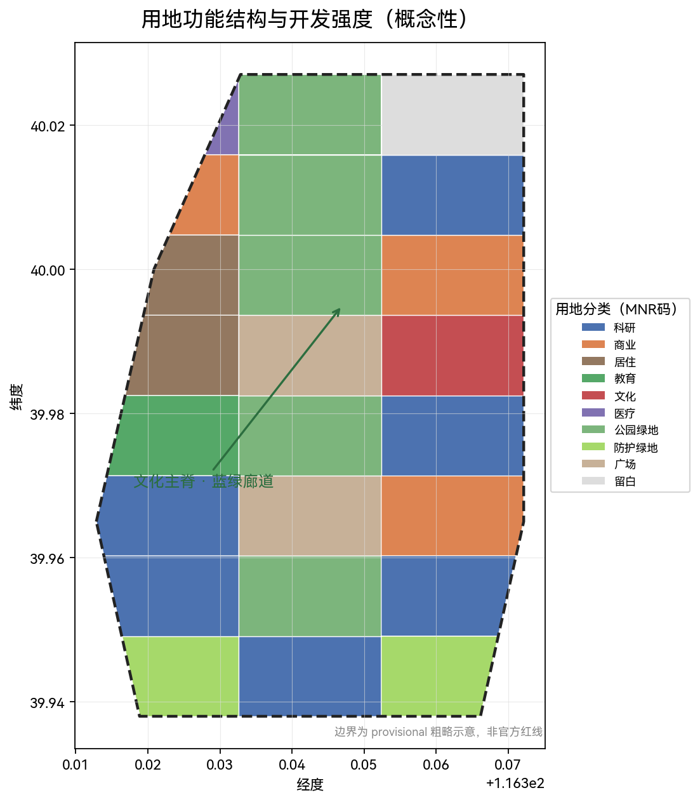
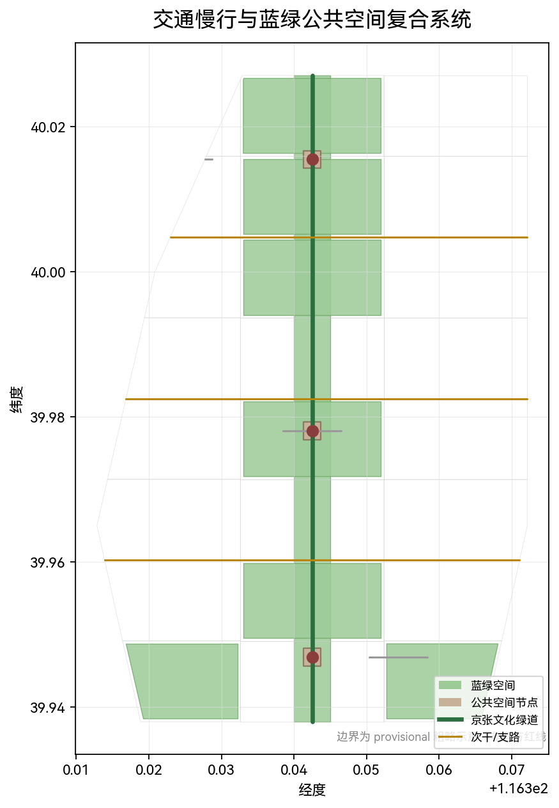

重点区域与 AI 场景

图3 · 众智园 / AI 原点社区 / 大钟寺
众智园 AI 加速区 ≈192.1ha
AI 全栈自主创新与治理话语权承载区。
北京 AI 原点社区 ≈104.3ha
世界级 AI 创新生态与人才原点。
大钟寺 AI 产业区 ≈72.0ha
智能原生新业态试点。
京张文化遗产与城市智能体治理融合设计 — 以百年铁路之灵承载数据之灵与共治之灵，构建「文化感知 + 智能协同 + 多元共治」的 AI 创新带。
三层空间工作框架下的总体总览地图：文化主脊、重点区域与蓝绿走廊的空间关系。43609232.5580.3173620.003758

按「统筹研究→总体设计→重点区域」三级递进，北自北五环、南至北京北站。
世界级 AI 创新生态 + 未来城市形态战略研究。
京张遗址公园周边，控规深度城市设计。
众智园、AI 原点社区、大钟寺三处详细设计。
概念性用地分区采用国土空间用地分类码（科研/商业/居住/教育/文化/绿地/广场等），综合容积率约 1.34。

AI 全栈自主创新与治理话语权承载区。
世界级 AI 创新生态与人才原点。
智能原生新业态试点。

更新项目清单按近（一期）、中（二期）、远（远期）三阶段组织，结合政策建议、公众参与与运维机制（见 geometry/phasing.geojson）。
文化主脊节点与先行公共服务设施、AI 场景试点。
研发街区与原点社区更新、慢行断点补齐。
全带产业、蓝绿与治理体系完整落地（概念建议）。
面向官方公告 17 项任务与 6 项 Agent 任务、5 项强制标准、15 项必需设计深度全覆盖（详见 compliance_matrix.json / standard_matrix.json / design_depth_matrix.json）。
| 检查项 | 结果 | 对象 |
|---|---|---|
| BOUNDARY_TRUST | PASS | geometry/site_boundary.geojson |
| KEY_AREAS_TRUST | PASS | geometry/key_areas.geojson |
| LAND_USE_TOPOLOGY | PASS | geometry/land_use.geojson |
| VISUAL_STATIC | PASS | visual/index.html |
| PROFESSIONAL_EVIDENCE | PASS | proposal.md |
| BILINGUAL_CONTRACT | PASS | proposal.en.md + en 配套 |
以下假设在 sources.json / assumptions.json 登记，provisional 边界与缺资料均明确披露。
空间边界为 provisional 替代，非官方红线，需按官方多边形重算。
现状建筑与权属数据缺位，地块级拆改结论仅作概念参考。
产业运营/政策/活动均表述为深化方向，不代表政府审定。
AI 场景卡明确隐私边界、人工复核与运营主体。